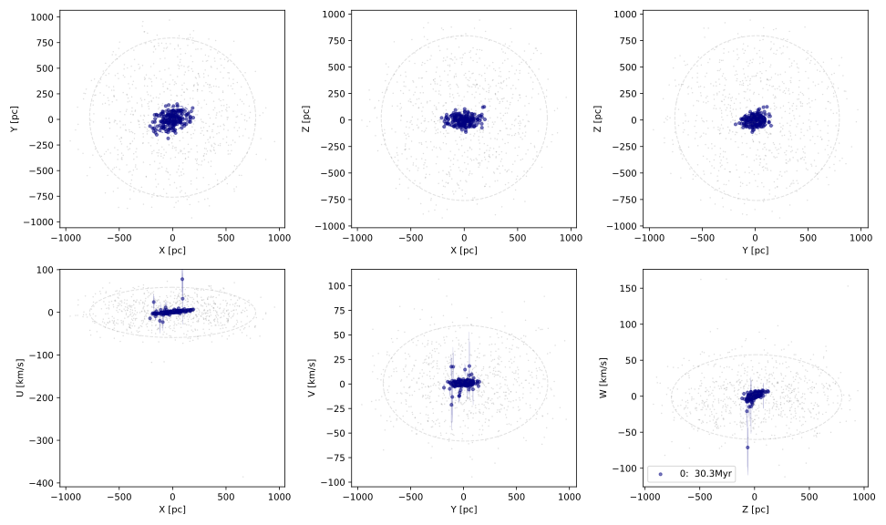

Worked Examples#
Here we outline a couple of worked examples which demonstrate how to use Chronstar.
Synthetic Example#
For testing purposes, Chronostar has a built in synthetic data generator,
SynthData.
Note
Don’t look too closely at the source since it’s still a bit of a mess…
Generating Synthetic Data#
The process of synth data generation is as follows:
Define the initial mean and covariance of one or more independent 6D Gaussian stellar distributions in cartesian space (right-handed system, centered on the local standard of rest, such that
Xpoints towards the Galactic Center)Randomly sample points from the distributions, this are the stars’ birth places
Project each star forward through time by the age of its component to get the cartesian data of their current positions
Convert cartesian data into observables by “measuring”
Assign measurement uncertainties to the observables based on log-normal distributions fitted to Gaia data
Offset each measurment by some amount, where the amount is drawn from a normal distribution, with \(\mu=0\) and \(\sigma\) equal to the assigned measurement uncertainty.
This process will provide us with a relatively realistic astrometry dataset, formatted like a fits file downloaded from Gaia. In code, this looks like the following:
import numpy as np
from chronostar import synthdata
from chronostar import datatools
# Define a "background" component
DIM = 6
bg_mean = np.zeros(DIM)
bg_stdev_pos = 500.
bg_stdev_vel = 30.
bg_cov = np.eye(DIM)
bg_cov[:3] *= bg_stdev_pos**2
bg_cov[3:] *= bg_stdev_vel**2
bg_age = 0.
bg_nstars = 1_000
# Define an "association" component
assoc_mean = np.ones(DIM)
assoc_stdev_pos = 50.
assoc_stdev_vel = 1.5
assoc_age = 30.
assoc_nstars = 200
assoc_cov = np.eye(DIM)
assoc_cov[:3] *= assoc_stdev_pos**2
assoc_cov[3:] *= assoc_stdev_vel**2
# Generate each component stars' current positions in cartesian space
seed = 0
rng = np.random.default_rng(seed)
# Generate a component with current day mean `bg_mean`, and with a birth covariance
# of `bg_cov`
bg_stars = synthdata.generate_association(
bg_mean, bg_cov, bg_age, bg_nstars, rng=rng,
)
assoc_stars = synthdata.generate_association(
assoc_mean, assoc_cov, assoc_age, assoc_nstars, rng=rng,
)
stars = np.vstack((assoc_stars, bg_stars))
# To make things easy, we scale down typical Gaia uncertainties by 70%
synthdata.SynthData.m_err = 0.3
# Measure astrometry and get a fits table, this will be the input into `prepare-data`
astrometry = synthdata.SynthData.measure_astrometry(stars)
# Lets just quickly check for bad data, in particular, bad parallaxes
# we know the stars have a position spread of 1000 pc, so shouldn't be
# many stars beyond 1,000 pc, therefore we ignore any stars with parallax
# less than 1 mas
subset_astrometry = astrometry[np.where(astrometry['parallax'] > 1.)]
subset_astrometry.write('synth_astro.fits')
# Just for fun, lets save the "true memberships", but mask out stars with bad
# parallax
true_membs = np.zeros((assoc_nstars + bg_nstars, 2))
true_membs[:assoc_nstars, 0] = 1.
true_membs[assoc_nstars:, 1] = 1.
subset_true_membs = np.copy(true_membs[np.where(astrometry['parallax'] > 1.)])
np.save('true_membs.npy', subset_true_membs)
# And if you want the data in arrays for whatever reason...
astro_data = datatools.extract_array_from_table(astrometry)
astro_means, astro_covs = datatools.construct_covs_from_data(astro_data)
Now we have a synthetic data set. You may inspect it by:
>>> from astropy.table import Table
>>> t = Table.read('synth_astro.fits')
>>> t.info
<Table length=1200>
name dtype
--------------------- -------
source_id int64
ra float64
ra_error float64
dec float64
dec_error float64
parallax float64
parallax_error float64
pmra float64
pmra_error float64
pmdec float64
pmdec_error float64
radial_velocity float64
radial_velocity_error float64
Using Prepare Data#
We can convert this back into cartesian space, complete with covariance matrices,by the following command-line tool:
$ prepare-data synth_astro.fits
This will generate 4 files:
data_means.npy: the cartesian means of the data, with shape(n_stars, 6)data_covs.npy: the cartesian covariances of the data, with shape(n_stars, 6, 6)ids.npy: a 1D array of the stars’ gaiasource_id. This is useful for bookkeeping in the event some stars were discarded due to bad/missing data.all_data.npy: a convenience file, equivalent tonp.vstack((data_means.T, data_covs.flatten().T)).T, which is howSphereSpaceTimeComponentwill expect the data
You can check what this cartesian data looks like by plotting it:
$ plot-features -m data_means.npy -c data_covs.npy -z true_membs.npy -f 0,1.0,2.1,2.0,3.1,4.2,5 -o synth_plots
Note that this may take a few seconds, since we’re plotting so many points. This will
generate a file synth_plots/features.pdf.
The result should look a little like this:

Fitting a component#
For fun, lets fit a single component to the data. Since the data should be dominated by the background, we should get a component that describes the background, with similar mean and covariance to what we used to generate the data.
fit-component all_data.npy
You’ll get some raw output to the screen detailing the progress of a call
to maximize().
Each ‘H’ character represents 10 calls to the loss function, therefore each row
represents 500 such calls.
Since there are local minima every 20 Myr, we start the maximizations at various different ages.
The results should look a little like this:
age: 0.010
-------------------
----- RESULTS -----
-------------------
- params
[ -0.98046999 13.9609434 13.77419365 0.05277412 0.76612056
-0.80328497 344.95381506 26.0845931 0.01014714]
This says that the age is 0.01, the mean is near-ish 0 for all but Y and Z, and
that the birth position standard deviation (dxyz) is ~345 and the
birth velocity standard deviation (duvw) is ~26. Both of which are
relatively near the initial conditions of 500 and 30 respectively.
The cause of the smaller standard deviations is likely attributable to the overdenisty caused by the association stars. We didn’t expect anything useful from this fit though, it was just for fun.
Fitting a Mixture#
Lets fit a mixture model. For starters, lets help things start off by providing the true memberships as the initial memberships. For this we need to configure some settings. Write a config-mixture.yaml file with the following contents:
mixture:
init_params: init_resp
run:
savedir: output-mixture
Now call:
$ fit-mixture c config-mixture.yaml 2 all_data.npy true_membs.npy
This will kick off a 2-component mixture fit. The first component to be fit will be the association. Watch the output carefully. See that the maximize with age_offset=0.0 gets an age of 0.0 (res.x[-1]=0.00), but the later offsets get larger ages, and indeed the best age is determined to be ~30.
The final results should look a little something like this:
-------------------
----- RESULTS -----
-------------------
--- component 0 ---
weight: 0.21557755108623822
params:
[-47.28802468 3.81141519 -6.19299571 1.74412884 -0.1221947
-0.66227324 51.55373574 1.54039683 30.28259584]
--- component 1 ---
weight: 0.7844224489137618
params:
[ 0.29853494 17.91797311 18.17695939 -0.18002624 0.72729977
-1.1947355 388.74496962 29.45825668 0.00000144]
You can compare the standard deviations (the 3rd and 2nd last array elements)
and see they all match well except for the background component’s dxyz,
most likely because we discarded stars with low parallax (large distance) and
shrunk our dataset down.
We can go ahead and plot this now:
$ plot-features -m data_means.npy -c data_covs.npy -z output-mixture/memberships.npy -r output-mixture/ -f 0,1.0,2.1,2.0,3.1,4.2,5 -o plots-mixture -b
The -r option points to the results of the fit, specifically the stored parameters of the components. The -b flag makes all components with ages less than 0 coloured grey.
The result should look a little like this:
{kind=link}
We could hypothetically also try a mixture fit with no initial help. Modify the config-mixture.yml file like so:
mixture:
init_params: random
verbose: 2
verbose_interval: 1
tol: 1.e-5
run:
savedir: output-mixture-nohelp
This will use scikit-learn’s kmeans implementation to initialise memberships
to the components. See Configuration Settings for a complete list of all configuration settings.
We must reduce the tolerance from sklearn’s default of 1.e-3 down to 1.e-5 because the change in
average log probability is very subtle in the early EM iterations. In general,
this value should be 1.e-4 or lower.
However, this is not Chronostar’s intended purpose, so there’s no guarantee this will yield useful results…
Fitting Chronostar#
config-chron.yaml file:
component:
# Default is total number of cores, and controlled by environment variable
# NUMBA_NUM_THREADS
nthreads: 4
mixture:
tol: 1.e-5
verbose: 2
verbose_interval: 1
driver:
intermediate_dumps: True
savedir: output-chron/intermediate
run:
savedir: output-chron/final
$ fit-chronostar -c config-chron.yml data_all.npy
This takes on the order of a couple of hours. You may want to run it in the background:
$ nohup fit-chronostar -c config-chron.yml data_all.npy > logs-chron.out &
Your standard out (or logs-chron.out file) should begin like this:
1Letting introducer generate first IC
2self.n_generations=0
3[DRIVER] Fitting AAA-XXX-0000-0001-auto
4[DRIVER] init_comps[0].parameters_set=False
5--------------------------------------------------
6Fitting 1-comp mixture
7--------------------------------------------------
8Initialization 0
9[SKLMixture._initialize_parameters]: Initializing parameters!
10[SKLMixture._initialize_parameters]: self.init_params='random'
11[SphereSpaceTimeComponent.maximize] self.nthreads=None
At the moment the output are arbitrary print statements, so will likely change as logging becomes more sophisticated. Line 0 tells us that the ICPool was responsible for generating the first InitialCondition.
Line 2 tells us which mixture the Driver is fitting.
The name of the mixture is very descriptive and is intended to remain applicable regardless of the specific classes used by the driver.
The first part is a 3 digit unique identifier, which counts upwards from AAA for each mixture. The second part is the 3 digit unique identify of this mixtures “parent”, i.e. the previous mixture which the ICPool used to generate this mixture’s generation. Since this is the first mixture, it has no parent, and is thus labeled XXX. The third part is the generation number of this mixture. The fourth part is the number of components in this mixture. The final part is an optional extra chosen by the ICPool in use. In this case, it will tell us which component of the parent mixture ICPool split in two in order to generate this mixture. Again, since this is the first mixture, this doesn’t have a useful value.
For reference, the next mixture label will be AAB-AAA-0001-0002-0. It is the AABth mixture. Its parent was AAA, it is from generation 1, has 2 components and was initialised by splitting component 0 (the only component) of mixture AAA.
The ICPool uses this label for bookkeeping and for receiving score reports from the Driver. The label also serves as the directory names of intermediate dumps.
If all goes well, fit-chronostar should terminate after trialling two 3-component mixtures and rejecting them in favour of the sole 2-component mixture (AAB), meaning your output-chron/intermediate directory looks like this:
1AAA-XXX-0000-0001-auto
2AAB-AAA-0001-0002-0
3AAC-AAB-0002-0003-0
4AAD-AAB-0002-0003-1
Assuming the run has terminated successfully, the best fitting mixture is implicitly AAB, because the 3-component fits (lines 2 and 3) were the last mixtures attempted (therefore failed to improve the BIC) and their parent was AAB.
In each of these subdirectories, you will find a text file with detailed description of the configuration parameters, BIC score, weights, member counts and component parameters. You will also find a collection of numpy arrays: one for each component with their best fitting parameters, one for the relative weights of the components, and one for the membership probabilities.
In your output-chron/final directory you’ll find the same information and the same files but for the best fit.
Beta Pictoris Moving Group#
Here we detail how one could go about fitting to the Beta Pictoris Moving Group.
The process is as follows:
query Gaia DR3 for all stars’ kinematics within 100pc with decent parallaxes (errors better than 3%)
use prepare-data (a CLI tool) to convert astrometry to cartesian coordinates, ignoring stars with highly uncertain (or missing) radial velocities for now
apply some data cuts based on known cartesian fits
fit a gaussian to this data
find the top 2,000 candidates for this region (using overlap integrals)
unleash chronostar on the prepared data
Querying Gaia DR3#
Navigate to Gaia DR3’s Advanced ADQL query and submit the following query:
SELECT
-- Astrometry
g.source_id, g.ra, g.ra_error, g.dec, g.dec_error, g.l, g.b, g.parallax, g.parallax_error, g.pmra, g.pmra_error, g.pmdec, g.pmdec_error, g.ra_dec_corr, g.ra_parallax_corr, g.ra_pmra_corr, g.ra_pmdec_corr, g.dec_parallax_corr, g.dec_pmra_corr, g.dec_pmdec_corr, g.parallax_pmra_corr, g.parallax_pmdec_corr, g.pmra_pmdec_corr, g.ruwe,
-- Gaia photometry
g.phot_g_mean_mag, g.phot_bp_mean_mag, g.phot_rp_mean_mag, g.bp_rp, g.g_rp,
-- Radial velocities
g.radial_velocity, g.radial_velocity_error
FROM gaiadr3.gaia_source as g
-- BPMG: stars closer than 100pc and 3% or better error
WHERE (g.parallax > 10 AND g.parallax_error/g.parallax < 0.03)
This should get you 285,885 rows.
Because BPMG surrounds the Earth it is tricky to apply any meaningful data cuts, and hence we get a very large dataset.
Download this data as a fits file.
Extract the file:
gunzip xxxxxxxxxxxxxxx-result.fits.gz
Rename the file to something memorable:
mv xxxxxxxxxxxxxxx-result.fits betapic-100pc.fits
Converting to Cartesian#
Chronostar comes with a command line tool prepare-data. This tool reads in a fits file from Gaia and converts the data into cartesian coordinates.
Lets do that:
prepare-data -fw betapic-100pc.fits
The -f flag tells prepare-data to replace any missing radial velocities with a fake value (determined by averaging the available radial velocities) with an uncertainty of 10,000 km/s. The -w flag tells prepare-data to overwrite the fits file with any modifications. Since we’re inserting some fake rvs, we would like the file to remember this.
The conversion should take around 5 minutes.
As a result you should get the following files:
data_means.npy: the cartesian means of each converted stardata_covs.npy: the cartesian covariances of each converted stardata_all.npy: the full cartesian data (np.vstack((data_means.T, data_covs.reshape(-1,36).T)).T)ids.npy: the source ids of all stars successfully convertedfake_rvs_id.npy: the source ids of all stars provided with fake radial velocitiesfake_rvs_mask.npy: a boolean mask of all the converted stars that were given fake rvs
To keep things tidy, we store these files in a subdirectory. You may keep your directory structure flat if you like, but make sure to modify the paths appropriately in the following snippets.
mkdir data-full
mv *.npy data-full
When that’s done, we can apply the cartesian data cuts on all stars:
from astropy.table import Table
import numpy as np
datadir = 'data-full/'
rvsdir = 'rvs-subset-data/'
means = np.load(datadir + 'data_means.npy')
covs = np.load(datadir + 'data_covs.npy')
all = np.load(datadir + 'data_all.npy')
fake_rvs_mask = np.load(datadir + 'fake_rvs_mask.npy')
t = Table.read('betapic-100pc.fits')
upper_bound = np.array([110., 50., 60., 10., 1., 3.])
lower_bound = np.array([-60., -60., -30., -5., -8., -7.])
# Extract stars that are both within bounds and have real rvs
mask = (means > lower_bound).all(axis=1) & (means < upper_bound).all(axis=1)\
& ~fake_rvs_mask
print(sum(mask)) # should be ~725 stars
np.save(rvsdir + 'rvs_subset_mask.npy', mask)
np.save(rvsdir + 'rvs_subset_means.npy', means[mask])
np.save(rvsdir + 'rvs_subset_covs.npy', covs[mask])
np.save(rvsdir + 'rvs_subset_all.npy', all[mask])
subset_t = t[mask]
subset_t.write(rvsdir + 'rvs-subset-betapic-100pc.fits')
Fitting a single Gaussian#
Now lets fit a single component to the subset data.
First write a simple config-comp.yml file:
modules:
component: SpaceComponent
run:
savedir: result-comp
Since we’re not bothering with age, we can fit a free 6D gaussian, which is implemented by SpaceComponent.
This class doesn’t consider uncertainties, so we just give it the means:
fit-component -c config-comp.yml rvs-subset-data/rvs_subset_means.npy
We’ll get a result in result-comp directory as well as some output text.
The first 6 parameters of a SpaceComponent are its cartesian mean, the remaining 36 are its flattend covariance matrix, i.e. params = np.hstack(mean, cov.flatten()), and equivalently: mean = params[:6]; cov = params[6:].reshape(6,6).
Fitting RV Only Chronostar#
If stars without rvs aren’t important to you, you could run chronostar on this subset.
Make a config-chron-rvs.yml file
- modules:
component: SphereSpaceTimeComponent # default mixture: ComponentMixture # default
- mixture:
init_parmas: random # default verbose: 2 # defaut verbose_interval: 1 tol: 1.e-5
- component:
nthreads: 8 # or leave out in order to use all available cores by default
- driver:
savedir: result-chron-rvs/intermediate
- run:
savedir: result-chron-rvs/final
And run chronostar on the data:
$ fit-chronostar -c config-chron-rvs.yml rvs-subset-data/rvs_subset_all.npy
Apply data cuts to rvless stars#
The simplest means I can think of for how to apply a data restriction to the tens of thousands of rv-less stars which fall within the positional data bounds, is to evaluate their overlap integrals with our dataset with rvs, and pick the top N stars. Lets say the top 500, such that the majority of our data still has RVs.
from astropy.table import Table
import numpy as np
from chronostar.component.spacecomponent import SpaceComponent
from chronostar.maths import estimate_log_gaussian_ol_prob
# If you face issues with the jit compiled version, there's a pure python:
# from chronostar.maths import estimate_log_gaussian_ol_prob_py
datadir = 'data-full/'
rvsdir = 'rvs-subset-data/'
rvlessdir = 'rvless-subset-data/'
params = np.load('result-comp/params.npy')
comp = SpaceComponent(params)
means = np.load(datadir + 'data_means.npy')
covs = np.load(datadir + 'data_covs.npy')
all = np.load(datadir + 'data_all.npy')
fake_rvs_mask = np.load(datadir + 'fake_rvs_mask.npy')
ids = np.load(datadir + 'ids.npy')
ln_overlaps = estimate_log_gaussian_ol_prob(
data_all,
comp.mean,
comp.covariance
)
n_stars = 500
n_rvless_stars = sum(fake_rvs_mask)
# Calculate the cut off percentile for the top 500 ln_overlaps for rv-less stars
percentile = 100 * (1 - n_stars / n_rvless_stars) # the required percentile
cut_off = np.percentile(ln_overlaps[fake_rvs_mask], percentile)
# Sanity check:
print(f"Wanted {n_stars} rvless stars,")
print(f"got {sum(ln_overlaps[fake_rvs_mask] > cut_off)} rvless stars.")
top_rvless_mask = (ln_overlaps > cut_off) & fake_rvs_mask
bound_stars_with_rvs_mask = np.load(rvsdir + 'rvs_subset_mask.npy')
# Build mask for stars with rvs within bounds as well as the top rvless stars
top_stars = bound_stars_with_rvs_mask | top_rvless_mask
np.save(rvlessdir + 'rvless_subset_means.npy', means[top_stars])
np.save(rvlessdir + 'rvless_subset_covs.npy', covs[top_stars])
np.save(rvlessdir + 'rvless_subset_all.npy', all[top_stars])
np.save(rvlessdir + 'rvless_subset_ids.npy', ids[top_stars])
# If you like you could also store a subset of the table
t = Table.read('betapic-100pc.fits')
rvless_subset_t = t[np.where(np.isin(t['source_id'], ids[top_stars]))]
rvless_subset_t.write(rvlessdir + 'rvless_subset_t.fits')
# It's a lot of files....
# perhaps some cleaner approach is needed with subdirectories...
Now, we have 1,500 stars, all within the vicinity of BPMG, with every rv-less star that is plausibly a member!
Running Chronostar#
Without further ado, lets run chronostar! Make a config-chron.yml file:
modules:
component: SphereSpaceTimeComponent # default
mixture: ComponentMixture # default
mixture:
init_parmas: random # default
verbose: 2 # defaut
verbose_interval: 1
tol: 1.e-5
component:
nthreads: 8 # or leave out in order to use all available cores by default
driver:
savedir: result-chron/intermediate
run:
savedir: result-chron/final
aaaaannnnndd lets go!
$ fit-chronostar -c config-chron.yml rvless-subset-data/rvless_subset_all.npy
The authors haven’t gotten this far yet, so who knows what will happen! Good luck!